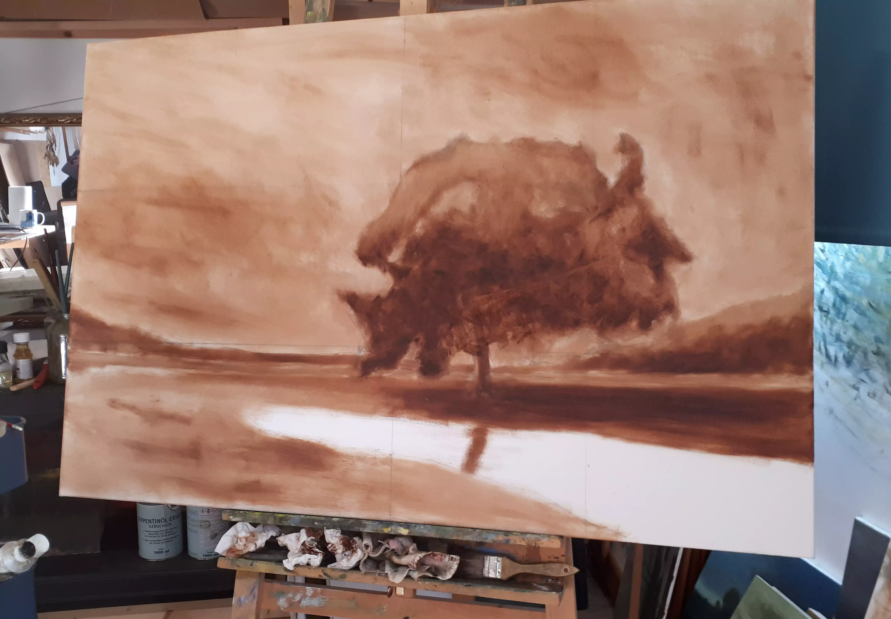
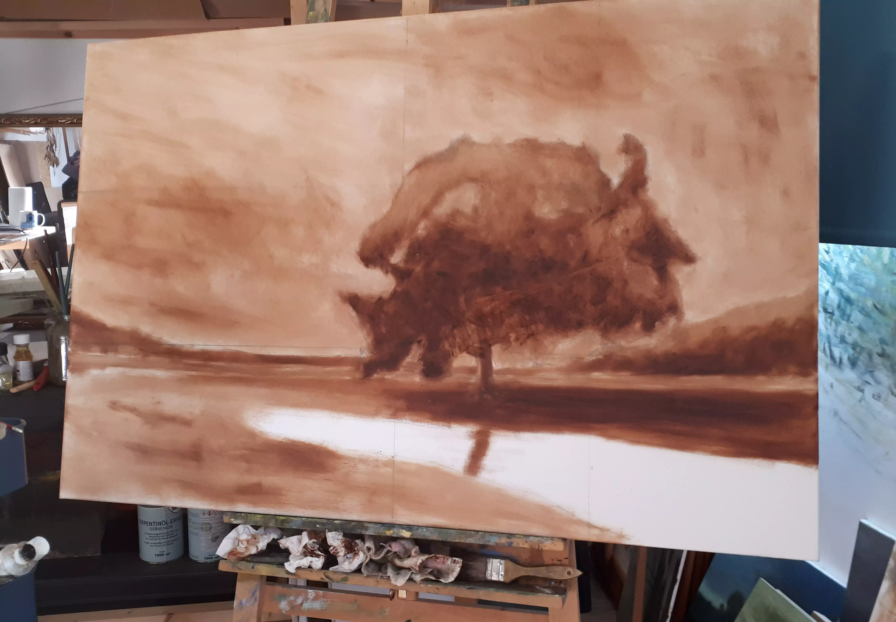

Commissions
As well as painting the landscapes that affect me, I am alao available to paint the ones that mean something to you.
If you have an idea for a painting you want but can't find anywhere. If there is a place that
is special or memorable to you in some way, then tell me about that place and I would be happy to accomodate
you as best I can.
![In this image we see three very similar thumbnail sketches in pen, which
depict three possible composition ideas
for the above painting. There is one above, centered and two below it. In the above sketch and the lower right one,
the floodwater is placed more to the right of the image, as with the final piece. However in the lower left, the floodwater
is placed more to the left. These sketches are very basic and use simple line work to show the shape of the painting's
elements and some hatching to depict where the light and dark might be. From left to right he bottom two images each have an
arrow next to or above them respectively, which shows intended light direction.](TRPsketch.img) The painting seen above is titled August Flood, at the Regional Park and I was commissioned to paint it in 2021. The
focus of the painting was a large tree turning red in the Autumn. I began the work with some preliminary sketches and
diagrams, in order to figure out the best way to present the tree.
The painting seen above is titled August Flood, at the Regional Park and I was commissioned to paint it in 2021. The
focus of the painting was a large tree turning red in the Autumn. I began the work with some preliminary sketches and
diagrams, in order to figure out the best way to present the tree.
This commission was a very large piece so it was important to me that before I started, I had a very good idea of what it would look like. After drawing some diagrams I painted a small oil sketch of what the painting might look like. While I was happy with this preparatory work I decided to change the composition.![In this image we see a small
oil sketch painted in preparation for the final work seen above. However the composition in this sketch ultimately was
not the one I choose for the final version. In this sketch the tree is placed at the left and is much larger in the painting,
covering most of the sky and middle ground. Another difference is that in this composition the water runs behind the tree
instead of in front of it. The colours though are almost entirely the same as what would be in the finished piece except
here the land also features a bit of green for grass.](TRPoilsketch.img)
All of the important details of this work were provided by the patrons who commissioned it. The tree, the time of year and the colours throughout the piece were all important in creating the scene they wanted on their wall.
Having shown my plans to the patrons and seeing that they were happy I could start the final bit of prep work, painting an underpainting. With everything mapped out I could finally begin painting the scene you see above. 
Please note that I am, at this time, solely a landscape artist. Please don't ask me to paint you or your cat, because I will have to refuse. Finally, know that prices will depend entirely on the details and the amount of work in your commission.
This commission was a very large piece so it was important to me that before I started, I had a very good idea of what it would look like. After drawing some diagrams I painted a small oil sketch of what the painting might look like. While I was happy with this preparatory work I decided to change the composition.
All of the important details of this work were provided by the patrons who commissioned it. The tree, the time of year and the colours throughout the piece were all important in creating the scene they wanted on their wall.
Having shown my plans to the patrons and seeing that they were happy I could start the final bit of prep work, painting an underpainting. With everything mapped out I could finally begin painting the scene you see above. 
Please note that I am, at this time, solely a landscape artist. Please don't ask me to paint you or your cat, because I will have to refuse. Finally, know that prices will depend entirely on the details and the amount of work in your commission.